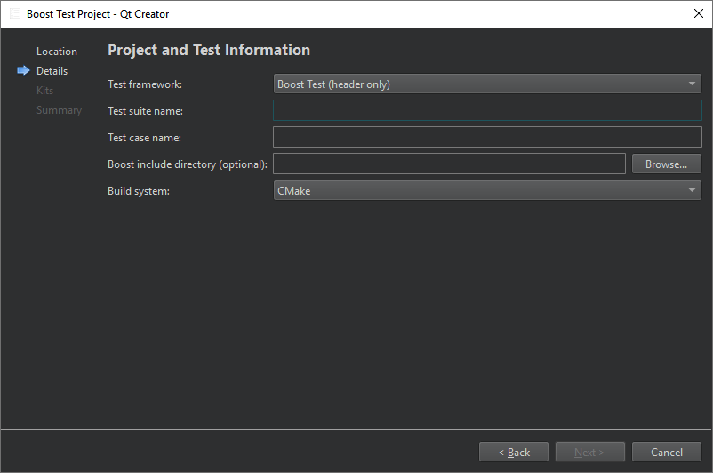

Create Boost tests
To build and run Boost tests, install Boost.Test on the computer. Typically, the Boost installation includes it. Download Boost from Boost.org.
If the compiler and build system can find the Boost libraries, you do not need to specify the include directory when creating the test.
To create a Boost test:
- Go to File > New Project > Test Project.
- Select Boost Test Project > Choose to create a project with boilerplate code for a Boost test.
- In the Project and Test Information dialog, specify settings for the project and test:

- In Test framework, select Boost Test (header only) to include needed headers, or Boost Test (shared libraries) to link against Boost Test.
- In Test suite name, enter a name for the test suite.
- In Test case name, enter a name for the test case.
- In Boost include directory (optional), enter the path to the directory that has files needed by Boost.Test, such as version.hpp and the test subfolder that contains the test header files.
- In Build system, select the build system to use for building the project: CMake, qmake, or Qbs.
Qt Creator creates the test in the project directory.
For more information about creating Boost tests, see Boost.Test.
See also How To: Test, Select the build system, Testing, and Test Results.